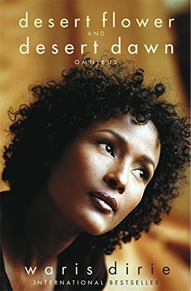
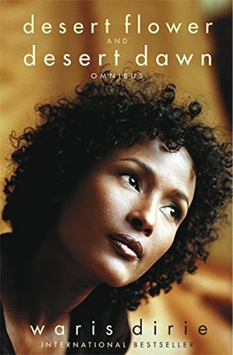

Qui est-elle ?
Ce livre est une de Waris Dirie.
Elle nous raconte son histoire qui commence en Somalie.
L’autobiographie débute à l’âge de ses 3 ans.
Dans cet article, ce sont sur les premiers chapitres que nous allons nous tourner.
Les premiers chapitres se tournent vers son enfance, vers les 3 ans à ses 13 ans.
Passant par son excision, au viol, et au mariage forcé.
Son histoire atteint forcément la sensibilité des lecteurs, surtout pour des personnes n’ayant pas vécu ce genre de “tradition”.
 

Résumé
Le livre débute au moment où elle croise un lion dans le désert après qu’elle se soit enfuie de chez elle, ensuite elle nous ramène en arrière.
A l’âge de 3 ans, elle suivit sa mère, une amie et sa soeur pour voir ce qu’est ce fameux passage de l’excision pour être enfin une femme.
En ayant vu ce que c’était, ça n'arrêtera pas cette forte envie de se faire exciser.
Son excision fut à l’âge de 5 ans, ça mère la tenait contre un rocher avec ses jambes et la vieille femme l’excisa.
Elle nous raconte qu’avant l’excision, la femme sort une lame de rasoir abimée, avec du sang séché dessus, et qu’elle cracha sur la lame avant de commencer.
Après elle fut emmené dans une hutte seule pendant 2 semaines, avec les jambes reliées pour que ça cicatrise et ne s' ouvre pas.
Elle eut une petite infection mais pas trop grave. Cela dit, une de ses soeur et une de ses cousines, sont mortes après l’excision.

Après l’excision, le père protège ses filles des relations sexuels et des viols, pour qu’elles reste “intact” le jour ou elles épouserons un autre homme.
Elles sont préservées, le but étant, que c’est lui qui ré ouvre le vagin à la nuit de noce.
A l’âge de 13 ans, elle voulait se marier avec un homme qui était intéressé par sa sœur, mais un jour, s’occupant des chameaux sa sœur est venue la chercher lui disant que son père avait un mari pour elle. Allant voir l’homme, elle vit que c’était un vieil homme de 60 ans.
Cet homme proposait en échange 5 chameaux.
Elle à donc décidé de fuir, en pleine nuit, elle s'est enfuie de la hutte en courant, sans affaires, ni nourriture ni eau.
Le lendemain, son père la rattrape, mais n’est pas parvenu à la ramener.
Un autre matin, en se réveillant, elle avait un lion en face d’elle, mais il ne l’a pas mangé. Par pitié peut être ou car il n’y avait rien à manger dessus.
Arrivant sur une route, elle à fait du “stop”, un jour, un camion s'est arrêté.
Dedans il y avait, le conducteur, et deux hommes. Elle est allée seule à l’arrière, sur des pierres, mais en pleine nuit, un homme est allé vers elle. Il essaya de la violer, mais elle l’a frappé avec une pierre, et s’est enfui.
Après avoir enfin réussi d’arriver dans une ville en Somalie, elle chercha où vivait son oncle.
Un homme lui proposa de l’aider, l’emmena chez lui, lui donna à manger, et lui dit d’aller faire une “sieste”.
Quelques années avant, un homme lui avait proposé la même chose et avait essayé de la violer. Elle pris donc la décision de fuire.
En sortant, une vieille dame lui demande qui elle cherchait, et l'a accompagné chez l’oncle.
Pour connaître la suite, je vous invite à lire le livre Fleur du désert, qui est vraiment intéressant et nous apprend plein de choses.